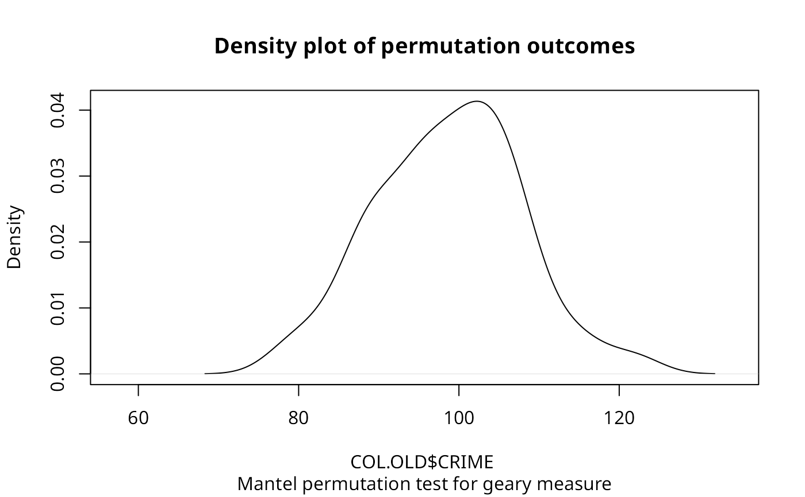

sp.mantel.mc.RdA permutation test for the spatial general cross product statistic with
Moran (\(C_{ij} = z_i z_j\)), Geary
(\(C_{ij} = (z_i - z_j)^2\)), and Sokal
(\(C_{ij} = |z_i - z_j|\)) criteria, for
\(z_i = (x_i - \bar{x}) / \sigma_{x}\).
plot.mc.sim is a helper function to plot the outcomes of the
permutation test.
a numeric vector the same length as the neighbours list in listw
a listw object created for example by nb2listw
number of permutations
"moran", "geary" or "sokal" criteria for similarity
default attr(listw, "zero.policy") as set when listw was created, if attribute not set, use global option value; if TRUE assign zero to the lagged value of zones without
neighbours, if FALSE assign NA
a character string specifying the alternative hypothesis, must be one of "greater" (default), "two.sided", or "less".
should the data vector names be checked against the spatial objects for identity integrity, TRUE, or FALSE, default NULL to use get.spChkOption()
return an object of class boot from the equivalent permutation bootstrap rather than an object of class htest
the object to be plotted
the range of the x axis
a title for the x axis
an overall title for the plot
a sub title for the plot
either "density" or "hist"
further arguments passed through
A list with class htest and mc.sim containing the following components:
the value of the observed Geary's C.
the rank of the observed Geary's C.
a character string describing the alternative hypothesis.
a character string giving the method used.
a character string giving the name(s) of the data, and the number of simulations.
the pseudo p-value of the test.
nsim simulated values of statistic, final value is observed statistic
the mean and variance of the simulated distribution.
Cliff, A. D., Ord, J. K. 1981 Spatial processes, Pion, p. 22-24,
Haining, R. 1990 Spatial data analysis in the social
and environmental sciences, Cambridge: Cambridge University Press, p. 230--1.
The function has been checked against general matrix code posted to the
r-help list by Ben Bolker on 1 May 2001; another mantel() function
is in the vegan package.
data(oldcol)
sim1 <- sp.mantel.mc(COL.OLD$CRIME, nb2listw(COL.nb),
nsim=99, type="geary", alternative="two.sided")
sim1
#>
#> Mantel permutation test for geary measure
#>
#> data: COL.OLD$CRIME
#> weights: nb2listw(COL.nb)
#> number of simulations + 1: 100
#>
#> statistic = 51.927, observed rank = 1, p-value = 0.02
#> alternative hypothesis: two.sided
#> sample estimates:
#> mean of permutations sd of permutations
#> 98.852997 8.934135
#>
plot(sim1)

sp.mantel.mc(COL.OLD$CRIME, nb2listw(COL.nb), nsim=99,
type="sokal", alternative="two.sided")
#>
#> Mantel permutation test for sokal measure
#>
#> data: COL.OLD$CRIME
#> weights: nb2listw(COL.nb)
#> number of simulations + 1: 100
#>
#> statistic = 36.695, observed rank = 1, p-value = 0.02
#> alternative hypothesis: two.sided
#> sample estimates:
#> mean of permutations sd of permutations
#> 56.418584 3.227064
#>
sp.mantel.mc(COL.OLD$CRIME, nb2listw(COL.nb), nsim=99,
type="moran")
#>
#> Mantel permutation test for moran measure
#>
#> data: COL.OLD$CRIME
#> weights: nb2listw(COL.nb)
#> number of simulations + 1: 100
#>
#> statistic = 24.526, observed rank = 100, p-value = 0.01
#> alternative hypothesis: greater
#> sample estimates:
#> mean of permutations sd of permutations
#> -0.3401381 4.5579226
#>